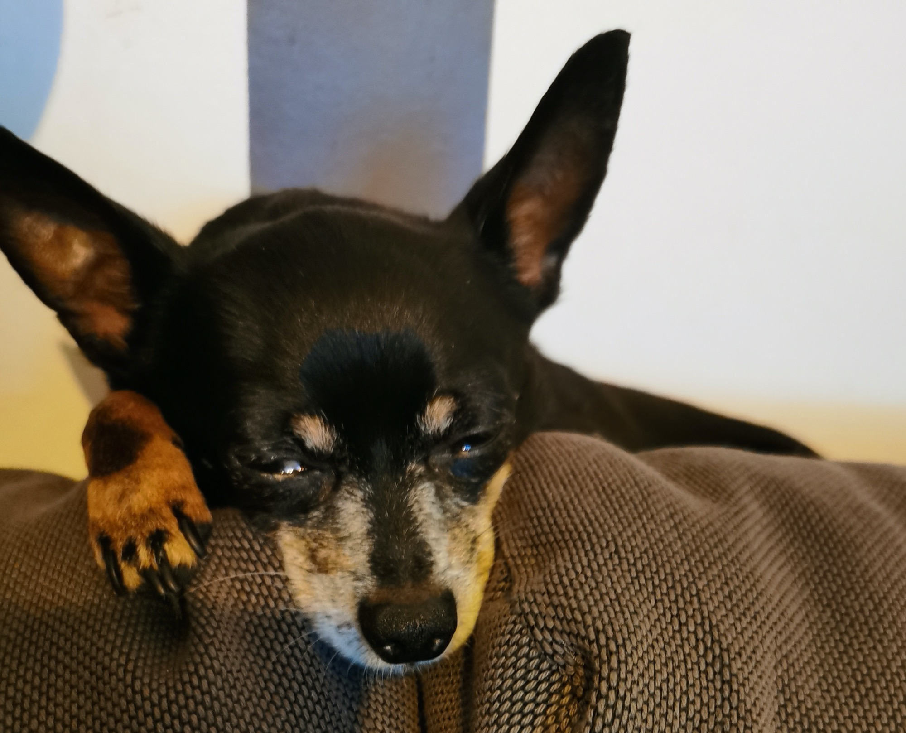
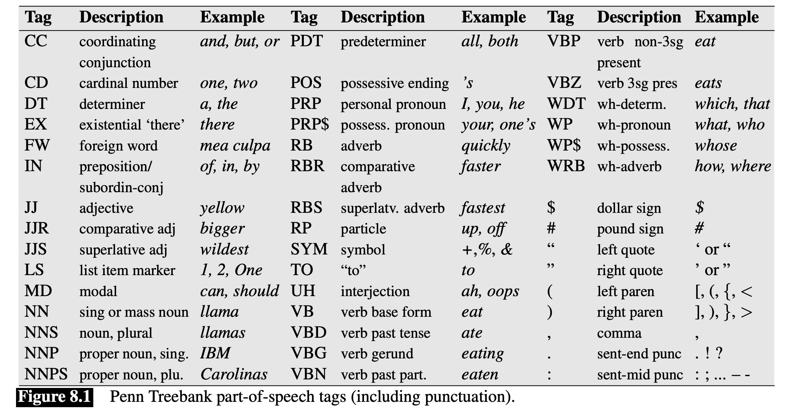

### "I know the project is due today but I'm just getting started and I have questions..."  --- # Automatic Part-of-Speech Tagging ### Will Styler - LIGN 6 --- ### Today's Plan - Why computers can't POS tag like humans - Creating a corpus for POS-tagging use - Part-of-Speech Ambiguity - How does HMM-based POS tagging work? - POS Tagging is hard --- ### We've talked about parts of speech already --- ### Lexical Categories - **Nouns**: bike, car, cat, dog, tofu, dude, bling - **Verbs:** go, eat, talk, walk, yeet - **Adjectives:** lit, sweet, hot, cool, awesome - **Adverbs:** well, fast, slowly, easily - **Pre/postpositions:** with, from, on, in - **Determiners:** the, a, that, this, those - **Pronouns:** she, he, him, her, it, I, you, they - **Conjunctions:** and, or, whenever, while - **Numeral:** one, twice, third - **Interjection:** ouch, tsk, damnit! --- ### ... but these are linguistic, human categories - We understand the functional distinction between an adverb and a preposition - We can talk within a certain language, but understand when the rules change - We know the *semantics* of a given word - We know that a pipe is an object, and that it has a function that could be verby --- ### We also gave you 'tests' to use - "Can you make it plural? If so, it's a noun!" - "Can you inflect it? If so, it's a verb!" - "If you can use a comparative construction, it's probably an adjective!" - "Pronouns can substitute for noun phrases" - "Is this a relationship a squirrel can have with a tree? Then probably Preposition!" --- ### ... but a computer can't use *any* of these tests - "Sure, rotates is the plural of 'rotate', so it's a noun" - "I treed, therefore, tree is a verb" - "This slide is computerer than the last one" - "What the heck is a noun phrase, anyways?" - "Squirrel? Tree? Huh?" --- ### So, we can't teach computers to do POS tagging in the same way that we teach humans to! --- # Preparing for POS Tagging --- ### Before we can automate it, we need to do it with humans - This is always going to be the case --- ### Determining the best tagset - This is partly language specific - What POS categories exist - What additional detail would be helpful in prediction - Partly based on what corpora are available - Use this tagset, or annotate 12 million words? --- ### For English...  (Table from Jurafsky and Martin 'Speech and Language Processing' 3e) --- ### Annotating a corpus for POS tags - Teach some annotators the POS-tagging system - Run a sample POS-tagging system to get suggestions - Have the annotators hand correct them --- > On/IN an/DT exceptionally/RB hot/JJ evening/NN early/RB in/IN July/NNP a/DT young/JJ man/NN came/VBD out/RP of/IN the/DT garret/NN in/IN which/WDT he/PRP lodged/VBN and/CC walked/VBD slowly/RB ,/, as/RB though/IN in/IN hesitation/NN ,/, towards/IN a/DT bridge/NN ./. --- All example tagging from today comes from [the Stanford Parser](http://nlp.stanford.edu:8080/parser/index.jsp) --- ### There are many tagged corpora already out there - You don't need to do this. - Which is good. - POS tagging is *super boring* --- ### Once you have a tagset and a corpus, you can use... --- # Automatic POS Tagging --- ## POS Ambiguity How much uncertainty there is about the part of speech of a given word --- ### Some words are *certain* in terms of POS - 'Funniest' - 'hesitantly' - 'Sharon' - Around 85% of words are *unambiguous* in terms of POS - ... but around 65% of *tokens* in running text are ambiguous :( --- ### Some words are only a bit ambiguous in POS - 'in' - 'a' - 'between' - 'Marshall' - 'Demonstrated' --- ### Some words are very ambiguous in POS - 'sink' - 'that' - 'lift' - 'will' --- ### Some words have many parts of speech - earnings growth took a back/JJ seat - a small building in the back/NN - a clear majority of senators back/VBP the bill - Dave began to back/VB toward the door - enable the country to buy back/RP about debt - I was twenty-one back/RB then --- ### POS tagging is about resolving this ambiguity --- ### The Stupid Approach: 'Most Frequent Tag' - "Let the tag of word X be the most likely tag of word X in our corpus" - Tagging is just a lookup table - 'fly' is most frequently a verb - Therefore, every instance of 'fly' is a verb - This provides a 'baseline' performance - "If we take the dumbest possible approach, what performance do we get?" --- ### Most Frequent Tag Accuracy - Accuracy here is 'percentage of tags correctly labeled' - Most Frequent Tag gets 92% accuracy on WSJ data! - If we want to use something more complicated, you have to do better than this. - If you can't beat the dumbest approach, you've got a problem --- ### Slightly more intelligent: Word form features - Capitalization - 'I showed Will my will, prepared by Green.' - Prefixes and suffixes are helpful. - 'Ungerplinked' - 'Flabertibly' - 'Skwerking' - X-Y constructions are usually adjectives - "New-found" - "46-year" - "Under-utilized" --- ### ... but words come in sequences. We should use that! --- # HMM-based POS Tagging --- ## Hidden Markov Model A machine learning process which models a series of **observations**, with the assumption that there's some 'hidden' **state** which helps to predict the observations --- ### One major assumption of HMMs - **The probability of the current state is based ONLY on the previous state** - The model does not have long term 'memory' - The model cannot look ahead - This is a left-to-right walk through the data --- ### HMMs for POS Tagging - **Observations:** The series of words in the text - **States:** The parts of speech of those words - 'Look at the sequence of words, to help predict which part of speech corresponds to this word' --- ### How do we use HMMs for POS-tagging - 1: Calculate the probabilities of parts-of-speech (and sequences) from a corpus - 2: Tokenize the input data - 3: Using the input, decide the most likely sequence of parts-of-speech --- ### We need to know two types of probabilities - **Observation probability:** The probability that a word has a given tag - e.g. "How likely is "will" to be a modal verb?" - **Transition Probability:** The probability of one POS, given the prior one - e.g. "How likely is a modal verb following a pronoun?" --- ### To get observation probabilities... - Count the number of instances of "will" in the corpus - Count the number of times that it's a modal verb - Count the number of times it's a noun - Count the number of times it's a proper noun - ... and so on ... - Turn these numbers into P(modal|will) (and so on) --- ### Observation probability gets at the idea of 'POS Ambiguity' - Words that have little ambiguity will have high probabilities for one category - Words that have lots of ambiguity may have nearly equivalent probabilties across several categories --- ### To get Transition probabilities... - Count the number of instances of modal in the corpus - Count the number of times modal follows pronoun - Count the number of times modal follows noun - Count the number of times modal follows verb - ... and so on ... - Turn these numbers into P(modal|Previous pronoun) (and so on) --- ### Transition probabilities get at the idea that syntax involves sequences of word types - How likely is a Determiner to be followed by a Noun? - REALLY likely - How likely is a preposition to be followed by a determiner? - Reasonably likely - How likely is a preposition to be followed by a proper noun? - Likely-ish - How likely is a modal verb (e.g. 'will') to be followed by a Noun? - Really unlikely --- ### Now we know the probabilities! - Then we tokenize - Then... --- ### We decode the HMM - "Given this sequence of words, what's the most likely sequence of POS tags" - This uses the Viterbi Algorithm - Which we're not going into! --- ### HMM Decoding: The Basic Idea - We know the probability of a given state (POS tag) given each word - We know the probability of a given state (POS tag) given the prior state (POS tag) - We can calculate the most probable state for each word in light of those two facts - **What is the most likely string of states that gets us through the entire sentence?** --- <img class="r-stretch" src="comp/pos_hmm_decoding.jpg"> --- ### So, we have the *most likely* set of POS tags - Both with respect to individual words' probabilities - ... and with respect to the likely sequence of tags - This gives us the best of both worlds! - Cool! --- ### One consequence of HMM-based tagging - Word order matters! --- > the/DT three/CD cute/JJ cats/NNS made/VBN will/MD sit/VB back/RP in/IN awe/NN - > sit/VB cute/JJ three/CD awe/NN the/DT will/NN back/RB made/VBN in/IN cats/NNS - 'will' goes from modal to noun - 'back' goes from particle to adverb --- ### How does HMM-based POS tagging perform? - Baseline ("Most Frequent Class"): ~92% accuracy - Hidden Markov Model POS Tagging: ~97% accuracy - **That's pretty good!** - This is one of the 'flagship' tasks for HMMs - Other approaches exist - Neural Networks didn't win, for once! - (Well, OK, they might win by a few decimal places) --- ... Why only 97% accuracy? --- # POS Tagging is hard --- ## Use-mention distinctions --- ### Not all words are being used, when being used - You can have words that show up in uninformative contexts - Words that are being mentioned, rather than used, are hard to POS-tag --- ### 'She said 'bear' was her favorite word.' - > She/PRP said/VBD `/`` bear/NN '/'' was/VBD her/PRP$ favorite/JJ word/NN ./. --- ### 'Roger texted me 'back'' - > Roger/NNP texted/VBD me/PRP `/`` back/VBP '/'' --- ### 'I bought the The Pianist DVD' - > I/PRP bought/VBD the/DT The/NNP Pianist/NNP DVD/NN - > I/PRP bought/VBD the/DT the/DT pianist/NN DVD/NN --- ## Ambiguous Sentences --- ### Some sentences are actually ambiguous in POS tagging - Not all ambiguities of POS are resolveable by humans --- ### 'Maria was entertaining last night' - > Maria/NNP was/VBD entertaining/JJ last/JJ night/NN --- ### 'I saw the official take from the store.' - > I/PRP saw/VBD the/DT official/NN take/VBP from/IN the/DT store/NN ./. --- ### 'You should ask a Smith.' - > You/PRP should/MD ask/VB a/DT Smith/NNP ./. --- ### 'I hate bridging gaps.' - > I/PRP hate/VBP bridging/VBG gaps/NNS ./. --- ## Rare or Unknown words --- ### Rare or unknown Words - Capitalization and Morphology are the best tools - You can rely mostly on the transitional probability within the model - "Well, I know that the last thing was a modal 'will', so 'gerfleeble' is probably a verb!" --- ### 'yeet' - > yeet/NN --- ### 'yeeting' - > yeeting/NN --- ### 'yeeted' - > yeeted/JJ --- ### 'I yeet when I throw empty cans' - > I/PRP yeet/VBP when/WRB I/PRP throw/VBP empty/JJ cans/NNS --- ### 'lit' - > lit/UH --- ### 'That phonetics lab meeting was lit' - > That/DT phonetics/NNS lab/NN meeting/NN was/VBD lit/JJ --- ### 'I'm studying English Lit' - > I/PRP 'm/VBP studying/VBG English/NNP Lit/NNP --- ### 'They lit the beacon of Amon Din to summon the Rohirrim' - > They/PRP lit/VBD the/DT beacon/NN of/IN Amon/NNP Din/NNP to/TO summon/VB the/DT Rohirrim/NNP --- ## Homonyms --- ### Homonyms are (always) a problem - Is 'saw' a past tense verb, a noun, or a present tense verb? --- ### 'I saw the sign' - > I/PRP saw/VBD the/DT sign/NN --- ### 'I saw the sign whenever I need to test the cutting feel of a new blade' - > I/PRP saw/VBD the/DT sign/NN whenever/WRB I/PRP need/VBP to/TO test/VB the/DT cutting/VBG feel/NN of/IN a/DT new/JJ blade/NN --- ### 'I bought a saw' - > I/PRP bought/VBD a/DT saw/NN --- # POS Tagging is crucial --- ### POS Tagging is very helpful - Helps disambiguate word senses - Helps identify verbs vs. the things the verbs are acting on - Provides the basis for syntactic parsing! --- ### Wrapping up - Computers can't use meaning or language intuitions to POS-tag - POS-tagged data is valuable - Words can be more or less ambiguous in terms of POS tags - HMMs work great for POS Tagging - But POS tagging is still hard! --- ### For Next Time - We'll talk about syntactic parsing --- <huge>Thank you!</huge>